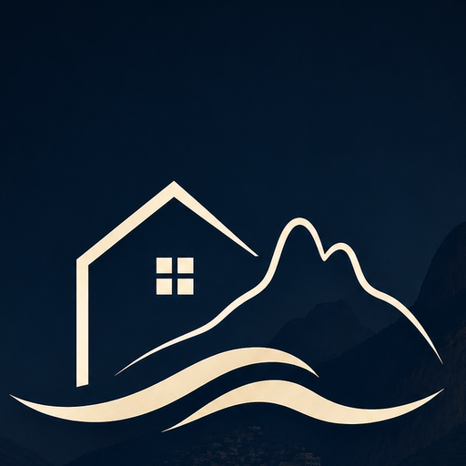

Praia do Leblon
Mar aberto. Um convite a desacelerar.

Sua Casa LeblonLEBLON · RIO DE JANEIRO · 102
Studio · Até 2 hóspedes

Cama queen, cozinha equipada e espaço para desacelerar depois da praia. Um studio para viver o bairro no seu ritmo.
O BAIRRO À SUA PORTA
Entre um mergulho, um café e uma boa leitura, descubra o Leblon.
Fotos e características em revisão para publicação.